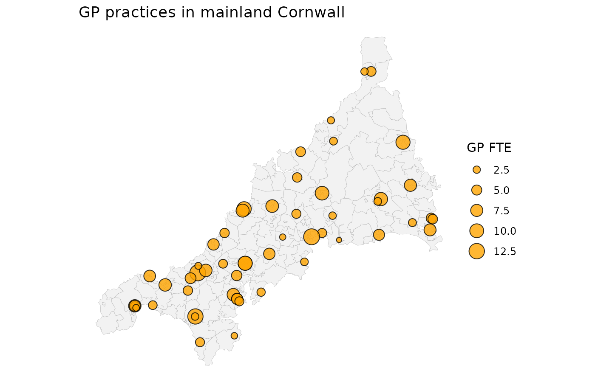
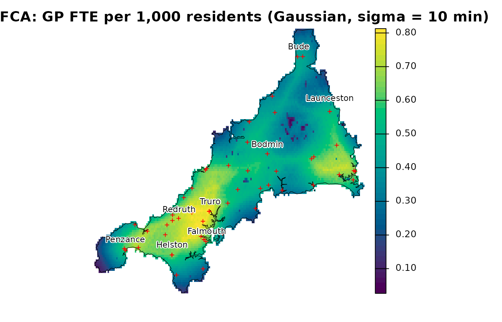

spax measures spatial access to services. You give it where people live (demand), what each facility offers (supply) and how long it takes to travel between them. It returns a floating catchment area (FCA) accessibility index: supply per resident, after discounting facilities that are further away. This guide computes one FCA index and maps it. spax also has an experimental allocation model that is fitted to where people actually go; the last section points to it.
The example data
spax ships open data for general practice (GP) care in Cornwall and the Isles of Scilly, in south-west England: the 55 GP practices with their GP full-time equivalents (FTE), 337 small areas with their registered residents, who is registered at which practice, and travel times. Two grids cover the same area: a population grid and one layer of travel minutes per practice. Everything runs offline. The Isles of Scilly have no road link to the mainland, so this guide uses mainland Cornwall only. The Cornwall GP example data describes each object, its sources and its limits.
# Mainland practices and small areas
mainland_gp <- filter(cornwall_gp, !scilly)
mainland_areas <- filter(cornwall_lsoa, !scilly)
ggplot() +
geom_sf(
data = mainland_areas,
fill = "grey95",
colour = "grey70",
linewidth = 0.1
) +
geom_sf(
data = mainland_gp,
aes(size = gp_fte_extg),
shape = 21,
fill = "orange",
alpha = 0.8
) +
scale_size_area(name = "GP FTE") +
labs(title = "GP practices in mainland Cornwall") +
theme_void()
Compute an E2SFCA surface
An FCA calculation needs three aligned inputs. Demand is a population grid of residents per cell, supply is a table of practices, and travel is a grid of minutes with one layer per practice, named by practice code.
# Residents per grid cell, and travel minutes with one layer per practice
pop <- read_spax_example("cornwall_pop.tif")
travel <- read_spax_example("cornwall_gp_travel.tif")
# Mainland practices as a plain table, and their travel layers
gp <- st_drop_geometry(mainland_gp)
travel <- travel[[gp$practice]]
# Keep cells with a travel time to every mainland practice, then drop the
# empty margin the islands leave behind
pop <- trim(mask(pop, sum(travel)))
travel <- crop(travel, pop)The enhanced two-step FCA (E2SFCA) first lets each practice gather the residents around it, weighted by travel time, and divides its GP FTE by that weighted count. It then gives each cell the weighted sum of the ratios of the practices it can reach. Here the weight is a Gaussian curve with a scale of 10 minutes: a practice 10 minutes away keeps about 61% of its weight and one 20 minutes away about 14%. The scale is a choice for this guide, not an estimate.
e2sfca <- spax_e2sfca(
demand = pop,
supply = gp,
distance = travel,
decay_params = list(method = "gaussian", sigma = 10),
demand_normalize = "identity",
id_col = "practice", # matches supply rows to travel layers
supply_cols = "gp_fte_extg"
)
e2sfcaSpatial Accessibility Analysis (E2SFCA)
Spatial Properties:
- Resolution: 0.00833333 x 0.00833333
- Dimensions: 117 x 187
Measures: 1
- gp_fte_extg
Facilities: 54
Parameters:
- Decay function: gaussian (sigma = 10)
- Demand normalization: identity The result is a spax object. Its
accessibility member is a raster of GP FTE per resident; we
map it per 1,000 residents.
# Practice locations in the grid's coordinates (longitude/latitude)
practices <- st_transform(mainland_gp, 4326)
plot(
1000 * e2sfca$accessibility,
axes = FALSE,
col = hcl.colors(50, "viridis"),
main = "E2SFCA: GP FTE per 1,000 residents (Gaussian, sigma = 10 min)"
)
points(vect(practices), pch = 3, cex = 0.5, col = "red")
Read the result
Each cross is a practice. The index is highest in the west of the county, from around Camborne and Redruth towards Truro and Falmouth, where several practices with many GP FTE lie within a short drive. It is lowest on Bodmin Moor and at the tips of the Land’s End and Lizard peninsulas, where the nearest practices are further away. The index is GP supply relative to nearby demand; it is not the share of people who use a practice, a waiting time or a rate of care.
Where next
- The data. The Cornwall GP example data introduces every bundled object, and Preparing your own data shows how to line up counts, facility IDs and travel times for your own study area.
- FCA indices. Comparing FCA methods sets E2SFCA beside 2SFCA, M2SFCA, 3SFCA and Huff-2SFCA, The E2SFCA calculation step by step rebuilds this surface by hand, and Grid resolution weighs resolution against cost.
- Allocation model. To model where residents register rather than score supply, start with Choosing an FCA index or an allocation model, then continue to the allocation workflow and facility bootstrap intervals.